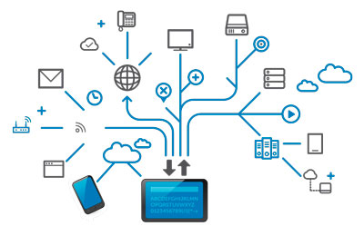
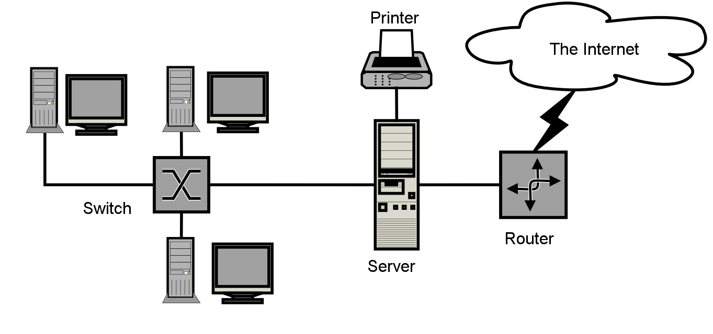
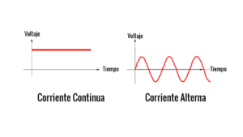
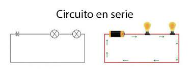
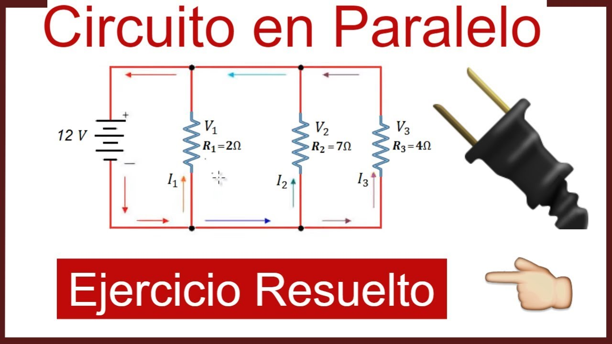
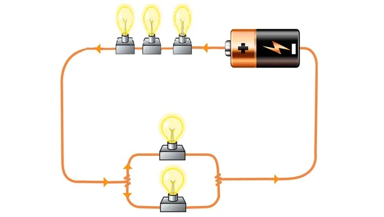

Telecomunicaciones
Toda emisión, transmisión y recepción de información por hilo, radioelectricidad, medios ópticos u otros sistemas electromagnéticos. Desde imagenes, sonidos o cualquier tipo de información que se desee comunicar a cierta distancia.

Permitido conectar a los usuarios sin importar su ubicación geográfica, al sacar provecho de las antenas para recibir y emitir información a través de diferentes formatos como teleconferencias o llamadas telefónicas, entre otros.
TIPOS DE SUBREDES
1. Personal Area Networks (PAN) o red de área personal.
2. Local Area Networks (LAN) o red de área local.
3. Metropolitan Area Networks (MAN) o red de área metropolitana.
4. Wide Area Networks (WAN) o red de área amplia.
5.Global Area Networks (GAN) o red de área global.
1. Personal Area Networks (PAN) o red de área personal.
2. Local Area Networks (LAN) o red de área local.
3. Metropolitan Area Networks (MAN) o red de área metropolitana.
4. Wide Area Networks (WAN) o red de área amplia.
5.Global Area Networks (GAN) o red de área global.

TIPOS
1. Televisió
2. Telefono
3. Telefono movil
4. Redes informaticas
5. Internet
6. Radio
7. RadioNavegación o GPS
1. Televisió
2. Telefono
3. Telefono movil
4. Redes informaticas
5. Internet
6. Radio
7. RadioNavegación o GPS
Analisis de Nodos
El análisis de nodos, o método de tensiones nodales es un método para determinar la tensión de uno o más nodo. Un nodo es cada uno de los puntos donde concurren dos o más barras. El equilibrio global de la estructura implica que el equilibrio local de cada uno de los nodos.
En análisis de circuitos eléctricos, el análisis de nodos, o método de tensiones nodales es un método para determinar la tensión (diferencia de potencial) de uno o más nodos. La ley de corrientes de Kirchhoff es la base del análisis de nodos.
Los métodos de análisis de nodos y mallas son herramientas que permiten la aplicación organizada y sistemática de las leyes de Kirchhoff (KVL o KCL) para resolver problemas complejos con un número de incógnitas y ecuaciones linealmente independientes muy reducido
Coriente alterna
La corriente alterna (CA) es un tipo de corriente eléctrica, en la que la dirección del flujo de electrones va y viene a intervalos regulares o en ciclos. La corriente que fluye por las líneas eléctricas y la electricidad disponible normalmente en las casas procedente de los enchufes de la pared es corriente alterna.
La corriente continua se utiliza normalmente para aplicaciones donde necesitamos un bajo voltaje, especialmente donde la energía es producida por pilas o por sistemas de energía solar fotovoltaica (células fotovoltaicas), ya que ambos sólo producen corriente continua.

La corriente alterna (c.a.) se produce en los generadores de c. a. El proceso ocurre cuando una bobina se mueve frente a un imán, los electrones se mueven en el hilo de la bobina. Ver generador. Los electrones no se desplazan a lo largo del hilo conductor y simplemente oscilan respecto a un punto.
FORMULA:
En los circuitos de corriente alterna la fem externa varía con el tiempo como v = V0 cos (ωt + α), donde V0 es la amplitud máxima, ω es la frecuencia angular y α es la fase. Se tiene la relación ω =2πf, donde fes la frecuencia. En EEUU y Canadá , f = 60hz.
Circuitos RLC
Los circuitos RLC esta formados por Resistencias (R), Condesadores (C) y Bobinas (L) de forma lineal, en corriente alterna aparecen dos nuevos conceptos reactancia y la impedancia.
En el caso de la corriente alterna, el flujo de electrones es bidireccional, oscila entre los polos positivo y negativo; en cambio, el flujo de electrones de la corriente continua es unidireccional, sigue una señal continua y se mantiene fijo en el polo positivo.
La reactancia generar una tensión de encendido suficientemente alta para la liberación del gas en el tubo fluorescente y limitar posteriormente la intensidad para estabilizarla.
La reactancia inductiva es Xl = (2π)(f)(L); donde "L" es la inductancia en henrios - "f" es la frecuencia (Hertz) - 2π es una constante - "XL" es la reactancia inductiva en Ohmios.
La impedancia de un circuito o de un componente representa la cantidad de ohm con la cual se opone a la circulación de corriente. Es la suma vectorial de la resistencia más la reactancia. La impedancia es un número complejo. La parte real es la resistencia del circuito y la parte imaginaria la reactancia.
SERIE:
Un circuito en serie es un circuito en el que los componentes están conectados uno detrás de otro, de tal manera que la corriente eléctrica fluye a través de cada componente en orden. En un circuito en serie, todos los componentes comparten la misma corriente eléctrica.

Un circuito en serie es un circuito en el que los componentes están conectados uno detrás de otro, de tal manera que la corriente eléctrica fluye a través de cada componente en orden. En un circuito en serie, todos los componentes comparten la misma corriente eléctrica.
PARELELO:
Circuitos paralelos. Si dos o más componentes están conectados en paralelo, tienen la misma diferencia de potencial (voltaje) en sus extremos. Las diferencias de potencial entre los componentes son iguales en magnitud y también tienen polaridades idénticas.

Circuitos paralelos. Si dos o más componentes están conectados en paralelo, tienen la misma diferencia de potencial (voltaje) en sus extremos. Las diferencias de potencial entre los componentes son iguales en magnitud y también tienen polaridades idénticas.
MIXTO:
Un circuito mixto, es aquel que tiene circuitos en serie y paralelo dentro del mismo circuito. Recordemos, para poder aplicar la ley de Ohm siempre tendremos que reducir el circuito a UNA sola resistencia .

Un circuito mixto, es aquel que tiene circuitos en serie y paralelo dentro del mismo circuito. Recordemos, para poder aplicar la ley de Ohm siempre tendremos que reducir el circuito a UNA sola resistencia .